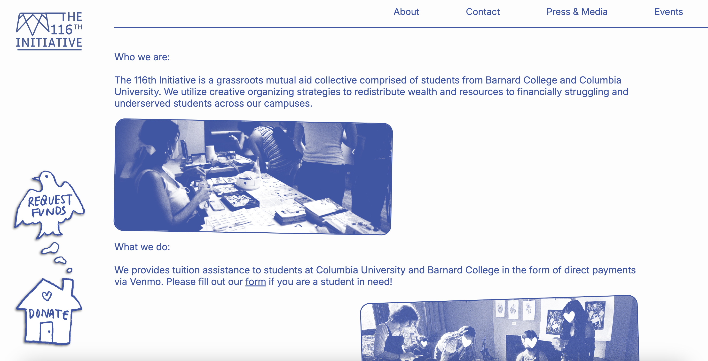
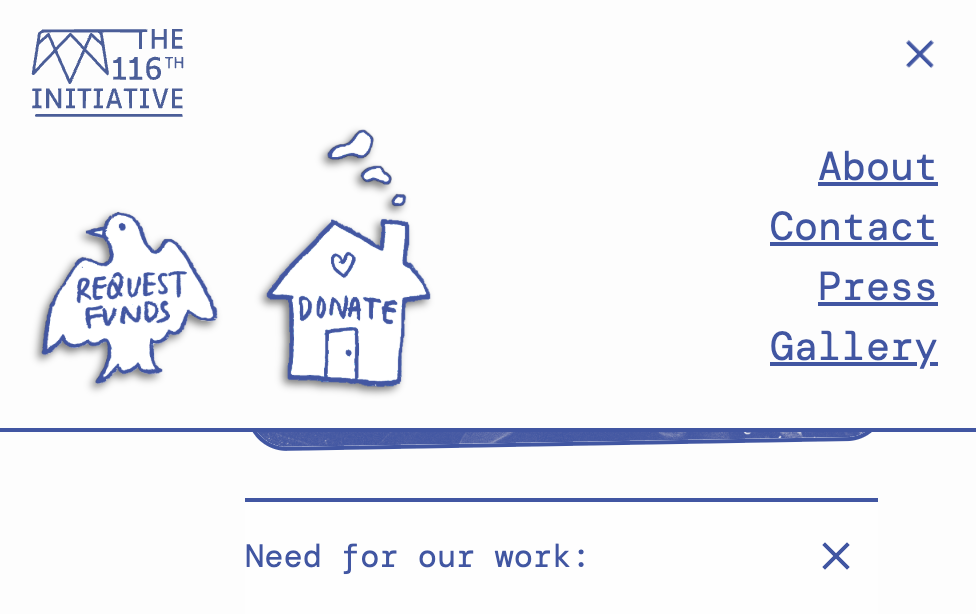

I am developing this website alongside Jonathan Nalikka for the 116th Initiative, a mutual aid organization for students at Columbia University and Barnard College. I was asked to create a complete redesign of the website, to make it look cleaner and more user-friendly while maintaining the organization’s grassroots identity. I am working with the rest of the team to design the site, creating Figma mockups for us to review together. I'm inspired by the look and feel of historical protest documents and ephemera, which used typewritten text, cut-and-pasted pictures, and cheap photocopying to quickly and securely circulate information.
TYPESCRIPT, REACT, CSS, GITHUB PAGES
116thinitiative.org / code